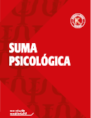
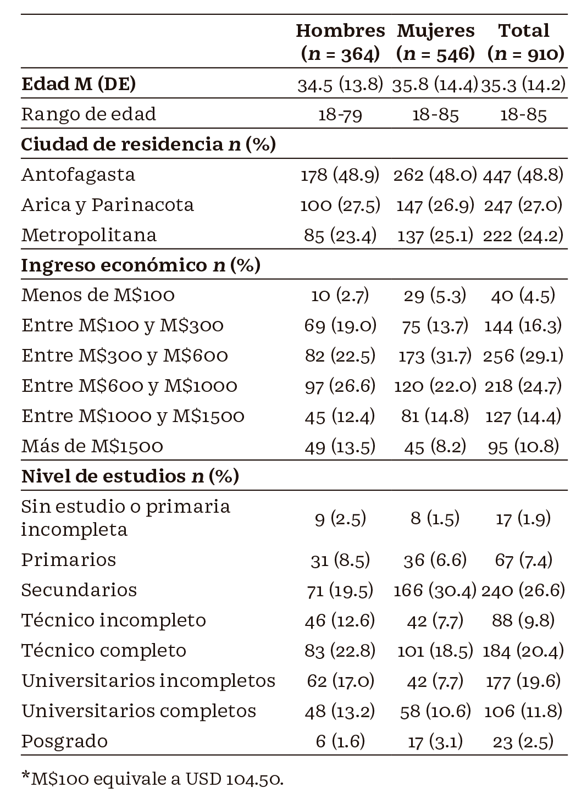
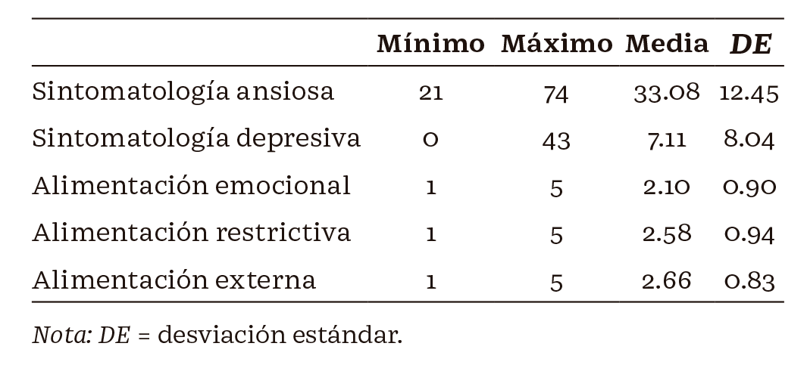
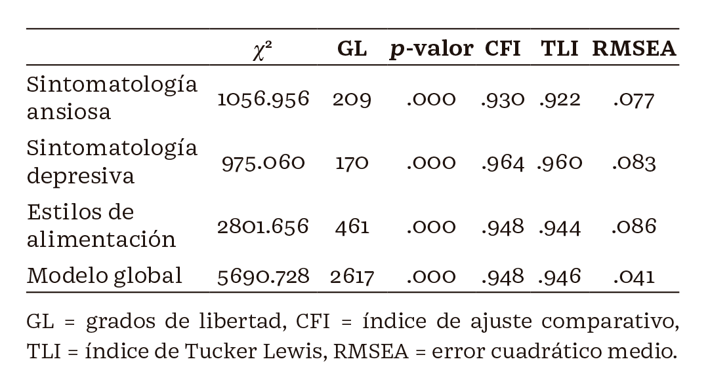
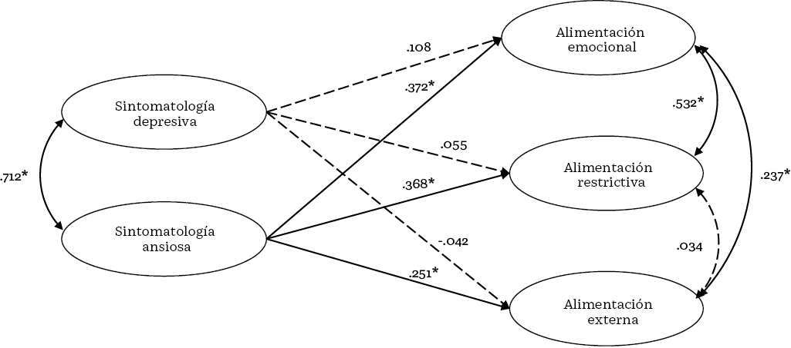

Suma Psicológicahttps://sumapsicologica.konradlorenz.edu.co/ |
 |
Nelson Huna,* , Alfonso Urzúab , Valentina Acuñac , Karen Barrazaa , José Leiva-Gutiérrezc
a Escuela de Nutrición y Dietética, Facultad de Salud, Universidad Santo Tomás, Antofagasta, Chile
b Escuela de Psicología, Universidad Católica del Norte, Antofagasta, Chile
c Escuela de Psicología, Facultad de Ciencias Sociales y Comunicaciones, Universidad Santo Tomás, Antofagasta, Chile
* Autor para correspondencia. Correo electrónico: nelsonhunga@santotomas.cl
Recibido el 18 de abril de 2024; aceptado el 6 de septiembre de
2024
https://doi.org/10.14349/sumapsi.2024.v31.n2.3
Antecedentes: existe una estrecha relación entre salud mental y estilos de alimentación. Indicadores de salud mental como sintomatología ansiosa y depresiva han reportado efectos directos sobre estilos de alimentación que promueven la malnutrición por exceso como la alimentación emocional o restrictiva. Se analizó el efecto de la sintomatología ansiosa y depresiva sobre los estilos de alimentación en mujeres y hombres del norte y centro de Chile. Método: participaron 910 adultos residentes en el norte y centro de Chile; se aplicó el Cuestionario Holandés de Conducta Alimentaria (DEBQ), así como el Inventario de Ansiedad de Beck (BAI) y el Inventario de Depresión de Beck-II (BDI-II). El análisis del modelo global de la relación entre variables se realizó mediante modelos de ecuaciones estructurales. Resultados: el modelo global presentó adecuados indicadores de bondad de ajuste; la sintomatología ansiosa tuvo un efecto directo y significativo sobre la alimentación emocional, alimentación externa y alimentación restrictiva. Por su parte, la sintomatología depresiva no presentó efectos significativos sobre ningún estilo de alimentación. Conclusiones: a medida que aumentan los niveles de ansiedad, aumentan los niveles de todos los estilos de alimentación. La depresión podría interactuar mediando la relación por el contexto emocional que genera la sintomatología depresiva.
Palabras clave: Ansiedad, depresión, alimentación, estilos de alimentación, comportamiento alimentario, salud mental.
Introduction: There is a close relationship between mental health and eating styles. Mental health indicators such as anxious and depressive symptomatology have reported direct effects on eating styles that promote excess malnutrition such as emotional or restrictive eating. The aim was to analyze the effect of anxious and depressive symptomatology on eating styles in women and men from northern and central Chile. Method: Nine hundred and ten adults living in northern and central Chile participated in the study. The Dutch Eating Behavior Questionnaire (DEBQ), the Beck Anxiety Inventory (BAI) and the Beck Depression Inventory-II (BDI-II) were administered. The analysis of the global model of the relationship between variables was carried out using structural equation modeling. Results: The structural model presented adequate goodness-of-fit indicators, anxious symptomatology had a direct and significant effect on emotional eating, external eating and restrictive eating. On the other hand, depressive symptomatology, did not present significant effects on any eating style. Conclusions: As anxiety levels increase, levels of all eating styles increase. Depression, could interact mediating the relationship by the emotional context that generates the depressive symptomatology.
Keywords: Anxiety, depression, feeding, eating styles, eating behavior, mental health.
El comportamiento alimentario puede definirse como el conjunto de acciones que realiza un individuo para alimentarse, incluyendo, entre estas, la selección y el consumo de los alimentos, las cuales están influenciadas por factores biológicos, psicológicos y socioculturales (López-Espinoza et al., 2018). En el caso específico de la selección y el consumo, se sabe que estos procesos están estrechamente vinculados a los estilos de alimentación (EA), entendidos como patrones relativamente estables con los que las personas se relacionan con la comida y con los alimentos (Alvear et al., 2021).
Aun cuando existen diversas formas de clasificar los EA, una de las más utilizadas en la literatura científica es su categorización dividida en tres áreas: emocional, restrictiva y externa (Hun et al., 2019; Van Strien et al., 1986, 2012). El EA emocional se caracteriza por el consumo de alimentos como método compensatorio frente a estados de excitación emocional o estrés (Ayyildiz et al., 2023); el EA restrictivo está determinado por la reducción del consumo de alimentos con el objetivo de mantener o perder peso (Wang et al., 2021); el EA externo se caracteriza por la selección y consumo de alimentos en función a los atributos o propiedades organolépticas de los alimentos como el sabor, el aroma o la presentación (Benbaibeche et al., 2023). Se han estudiado diversos factores relacionados con el comportamiento alimentario y, en particular, con los estilos de alimentación. Uno de los principales factores son los relacionados con los afectos y las emociones. Por ejemplo, se reporta que los individuos tienden a ingerir más alimentos en presencia de emociones positivas o negativas que frente a emociones neutras (Palomino- Pérez, 2020) y cambios frente a situaciones y contextos estresantes (Orellana et al., 2023) o la relación existente entre el tipo de afecto, la regulación emocional y los estilos de alimentación (Bobadilla-Soto et al., 2022). En esta misma línea, se ha reportado la asociación entre diversos componentes del comportamiento alimentario y los trastornos de base afectiva, principalmente la ansiedad y la depresión (Ramón-Arbués et al., 2019; Rivera-Gonzales et al., 2023), donde se evidencia, por ejemplo, que ante algunos sentimientos negativos asociados a sintomatología ansiosa y depresiva, se ven afectadas las respuestas alimentarias, la motivación por comer, incluso la masticación o la velocidad con la que se ingiere el alimento. Ello se vincula directamente con la intensidad de la emoción; a mayor intensidad de la emoción experimentada, también aumenta la desinhibición del control alimentario (Palomino-Pérez, 2020). La ansiedad puede entenderse como un sistema complejo de respuesta conductual, fisiológica, afectiva y cognitiva que se activa al anticipar sucesos o circunstancias que se juzgan como aversivas, porque se perciben como acontecimientos imprevisibles, incontrolables que potencialmente podrían amenazar los intereses vitales del individuo (Gautam et al., 2020; Penninx et al., 2021). Respecto a la depresión, puede ser conceptualizada como un esquema o triada que involucra una visión negativa de sí mismo, del entorno y del futuro (McCarron et al., 2021). Es decir, quien la padece presenta un estado de ánimo habitualmente bajo con una pérdida de la capacidad de disfrute e interés.Sintomatología ansiosa está caracterizada por miedos y preocupaciones excesivas a lo largo de la vida. Estas emociones emergen en situaciones que no representan un peligro real para el sujeto (Chacón et al., 2021), y se han reportado efectos directos y positivos sobre los estilos de alimentación emocional, restrictivo y externo, lo que favorece el aumento de consumo de alimentos frente a emociones negativas, la desinhibición del consumo de alimentos y la posterior restricción de ellos (Hun et al., 2020). La ansiedad por la comida, también conocida como food craving, se refiere a un estado psicológico, caracterizado por la búsqueda de un alimento particular, el que es subjetivo de cada persona, motivado por las expectativas de placer que dicho alimento traerá después de su ingesta (Meule, 2020). La ansiedad por comer también se presenta con frecuencia en aquellas personas que intentan llevar una dieta moderada en calorías o alimentación restrictiva con el objetivo de mantener o llegar a un peso ideal. La ansiedad se produce al llevar un control de alimentación por un tiempo determinado y pensar recurrentemente en comida, se despierta la sensación de ansiedad y hambre a través de mecanismos neuroendocrinos para mantener el equilibrio energético (Hernández et al., 2018), lo que estimula la ingesta hedónica; es decir, la ingesta de alimentos en particular placenteros y densos calóricamente (Meule, 2020).
En el caso de la depresión, esta se ha relacionado con el aumento en la adiposidad y el riesgo de padecer obesidad, lo cual demuestra una clara relación entre la calidad de la dieta y la actividad física en el desarrollo de enfermedades cardiometabólicas (Molendijk et al., 2018). Por otra parte, se han evidenciado asociaciones inversas entre la ingesta de ácidos grasos poliinsaturados, proteínas y ciertos micronutrientes con la sintomatología depresiva (Deacon et al., 2017; DʼSouza et al., 2019).
Esta investigación tiene como objetivo analizar el efecto de la sintomatología ansiosa y depresiva sobre los estilos de alimentación en mujeres y hombres del norte y centro de Chile, dada la importancia que tienen los estilos de alimentación en la mantención de la salud (Guertin et al., 2020) y, por ende, en la identificación de factores que pueden incidir en ellos. Este factor es relevante, toda vez que se han reportado prevalencias superiores al 5 % de la población en ambas patologías, tanto ansiedad como depresión (Chacón et al., 2021; Urzúa et al., 2020).
En este contexto, la hipótesis de la presente investigación sostiene que la sintomatología ansiosa y depresiva tiene un efecto directo y positivo sobre los estilos de alimentación emocional, restrictivo y externo.
La muestra total estuvo compuesta por 910 participantes de nacionalidad chilena residentes en tres regiones de las zonas norte y centro de Chile. En la zona norte se consideraron las regiones de Arica y Parinacota (27.0 %) y Antofagasta (48.8 %), mientras que en la zona centro se consideró la región Metropolitana (24.2 %). Del total de participantes, 364 (40 %) fueron hombres y 546 (60 %) mujeres. La edad promedio de los hombres fue de 34.5 años (DE = 13.8), mientras que para las mujeres fue de 35.8 años (DE = 14.4). Respecto al nivel de ingresos económicos, el 53.8 % de la muestra tuvo ingresos mensuales entre los 300 y 1000 pesos chilenos. Por otra parte, en cuanto al nivel educativo, la mayor proporción correspondió a estudios secundarios (26.6 %), seguidos por técnico completo (20.4 %) y universitario incompleto (19.6 %). Para más antecedentes sociodemográficos de la muestra total véase la Tabla 1.
InstrumentosCuestionario Holandés de Conducta Alimentaria (DEBQ). Este cuestionario es conocido por sus siglas en inglés Ducht Eating Behavior Questionnaire (DEBQ) (Van Strien et al., 1986). Consta de tres subescalas; tiene como objetivo evaluar tres tipos de comportamiento alimentario: (a) alimentación emocional: se caracteriza por la influencia de las emociones, ya sean positivas o negativas, sobre la selección y consumo del alimento, y viceversa; (b) restricción alimentaria: el comportamiento alimentario es regulado a través del control de la ingesta para conseguir una mantención o disminución de peso, y (c) alimentación externa: la selección y consumo de alimentos está influenciada predominantemente por factores externos, como las características organolépticas de los alimentos. Se utilizó la versión traducida al español y adaptada a la población chilena, la cual reportó indicadores psicométricos adecuados (Andrés et al., 2017). El alfa de Cronbach para alimentación emocional fue de .953, alimentación restrictiva de .927 y alimentación externa de .896.
Sintomatología ansiosa. La sintomatología ansiosa se midió utilizando la versión adaptada al español (Sanz, 2014) y con adecuados indicadores psicométricos en Chile (Landaeta-Díaz et al., 2021) del Inventario de Ansiedad de Beck (BAI) (Beck et al., 1988), el cual consta de 21 ítems para evaluar la gravedad de los síntomas de ansiedad. Los participantes informaron el grado en que se vieron afectados por los síntomas de ansiedad durante una semana. Las respuestas se calificaron en una escala tipo Likert de cuatro puntos que van de 1 (nunca) a 4 (severamente). Los puntos de corte establecidos permiten clasificar a los evaluados en uno de los siguientes cuatro grupos: 0-7 indica ansiedad mínima, 8-15 ansiedad leve, 16-25 ansiedad moderada y 26-63 ansiedad grave. El alfa de Cronbach fue de .952.
Sintomatología depresiva. Se utilizó la versión adaptada al español (Sanz et al., 2003) y con adecuados indicadores psicométricos en Chile (Valdés et al., 2017) del Inventario de Depresión de Beck-II (BDI-II) (Beck et al., 1996), que consta de 21 ítems de afirmaciones diseñadas para evaluar la gravedad de los síntomas de depresión en adultos y adolescentes. En cada uno de los ítems, se debe elegir entre un conjunto de cuatro alternativas la afirmación que mejor describe su estado durante las últimas dos semanas. Cada ítem se valora de 0 a 3 puntos, de menor a mayor severidad, con la puntuación total que varía de 0 a 63. Cuanto más alta sea la puntuación, mayor será la severidad de los síntomas depresivos. Se establecen cuatro categorías según la puntuación total obtenida: depresión mínima: 0-13 puntos; depresión leve: 14-19 puntos; depresión moderada: 20-28 puntos y depresión grave: 29-63 puntos. El alfa de Cronbach fue de .905.
ProcedimientoEl Comité de Ética Científica de la Universidad Católica del Norte revisó y aprobó la presente investigación mediante la Resolución 002b-2020. El reclutamiento de los participantes se hizo mediante un muestreo por conveniencia (Johnson, 2014). Los participantes de la muestra residían en la zona norte y centro de Chile. Los cuestionarios en formato de autorreporte utilizados se distribuyeron de manera física en hogares y centros laborales previa invitación y aceptación de participar en el estudio. Cabe destacar que, antes de completar los cuestionarios, los participantes debían firmar dos copias del consentimiento informado, de las cuales una se conservaría como respaldo para los investigadores y la otra sería entregada a los participantes.
Análisis estadísticosEl procesamiento de los datos y los análisis descriptivos se llevaron a cabo utilizando el software estadístico IBM SPSS v.21. La imputación de datos y los análisis que requirieron modelos de ecuaciones estructurales se realizaron en el programa Mplus 8 a través del método de estimación de mínimos cuadrados ponderados robustos (weighted least squares mean and variance adjusted [WLSMV]). En primer lugar, se analizaron los modelos de medida de los instrumentos DEBQ, BAI y BDI-II, como también el modelo global que integra los instrumentos, evaluando su ajuste mediante el error medio cuadrático de aproximación (root mean squared error [RMSEA]), el índice de ajuste comparativo (comparative fit index [CFI]) y el índice Tucker Lewis (Tucker Lewis index [TLI]). Para calcular el efecto de la sintomatología ansiosa y depresiva sobre los estilos de alimentación se recurrió a modelos de ecuaciones estructurales. De acuerdo con los estándares de literatura recomendados (Schreiber, 2017), RMSEA ≤ .08, CFI ≥ .95 y TLI ≥ .95 indicando un buen ajuste.
ResultadosEn la Tabla 1 se describen las características sociodemográficas de la muestra total. La mayoría de los participantes estuvo conformada por mujeres, residentes de la ciudad de Antofagasta.

Modelos de medida
En la Tabla 2 se presentan los estadísticos descriptivos de las distintas variables de interés. Como se observa, para las dimensiones de los estilos de alimentación se encontraron medias similares, destacándose la alimentación externa y restrictiva como superiores a la emocional.
Tabla 2. Descriptivos para sintomatología ansiosa, depresiva y estilos de alimentación

En la Tabla 3 se presentan los indicadores de bondad de ajuste de los modelos de medida de cada uno de los instrumentos utilizados (sintomatología ansiosa, depresiva y estilos de alimentación), además del modelo global que incorpora la relación entre los instrumentos. Si bien los ajustes no son excelentes, son aceptables y adecuados (Perry et al., 2015).
Tabla 3. Indicadores de bondad de ajuste de los modelos utilizados en la muestra total

Modelo estructural
Al evaluar el modelo global se encontraron indicadores de ajuste global adecuados (CFI = .948, TLI = .946, RMSEA = .041 IC90 % [.040 - .043]. Las estimaciones se pueden apreciar en la Figura 1.
En el caso de la depresión, ninguno de los efectos sobre los estilos de alimentación fue significativo (p > .05). Por su parte, la ansiedad sí tuvo un efecto significativo sobre la alimentación emocional (p < .001), alimentación externa (p < .001) y alimentación restrictiva (p < .001).
De lo anterior se desprende que niveles elevados de ansiedad se relacionan con niveles igualmente altos de alimentación emocional, externa y restrictiva, por lo que se puede argumentar que esta es la variable que afecta de forma significativa a estas últimas variables.

Figura 1. Modelo estructural del efecto de sintomatología depresiva y ansiosa sobre estilos de alimentación Nota: *p < .05.
Discusión
El objetivo principal de este estudio consistió en analizar la relación entre la sintomatología ansiosa y depresiva con los estilos de alimentación en hombres y mujeres residentes del centro y norte de Chile. En este contexto, se planteó que la sintomatología ansiosa y depresiva tendría un efecto directo y positivo sobre los estilos de alimentación emocional, restrictivo y externo.
En esta línea, los resultados obtenidos permiten apoyar parcialmente la hipótesis propuesta, ya que, por una parte, se demostró un efecto positivo y significativo entre la sintomatología ansiosa y los estilos de alimentación emocional, alimentación externa y alimentación restrictiva. Sin embargo, por su parte, la sintomatología depresiva no tuvo efectos directos significativos sobre ningún estilo de alimentación. En este contexto, la ansiedad es la variable fundamental que ejerce un efecto directo sobre los estilos de alimentación; sin embargo, la sintomatología depresiva y el contexto emocional que genera podría interactuar con la sintomatología ansiosa mediando el efecto sobre los estilos de alimentación.
Existen diferencias en los estilos de alimentación, relacionados con la intensidad de la emoción, lo que podría promover conductas de tipo obesogénicas, ya que, frente a la necesidad de controlar una emoción negativa, es decir, “comer emocional”, se promueve la ingesta, particularmente de alimentos dulces y con alto contenido de grasas (Palomino-Pérez, 2020; Van Strien, 2018). Al igual que frente a una restricción alimentaria, como una dieta hipocalórica, el hambre, las emociones negativas o positivas aumentan la ingesta de alimentos debido a un deterioro del control alimentario producto de la ingesta hedónica; es decir, las emociones negativas priorizan la necesidad de regular la emoción desagradable, viéndose afectada la capacidad de mantener la ingesta restringida (Palomino-Pérez, 2020). En esta línea, y en función de los resultados obtenidos, la sintomatología ansiosa se constituye como un factor de riesgo de obesidad y menor capacidad de autorregulación alimentaria (Cabezas-Henríquez & Nazar-Carter, 2022).
La asociación directa y positiva entre el estilo de alimentación restrictivo y la sintomatología ansiosa puede entenderse porque al llevar un control de alimentación y pensar de manera recurrente en comida y su restricción, se exacerban los mecanismos cognitivos que promueven la ansiedad y la necesidad de consumir alimentos que posean características organolépticas deseables para el individuo, que habitualmente se traducen en alimentos ricos en grasas saturadas y azúcares simples (Hun et al., 2020; Meule, 2020). En esta línea, la dinámica podría estar dada por una predominancia inicial del estilo de alimentación restrictiva, para luego dar paso a un predominio del estilo de alimentación externa.
Es importante mencionar que las emociones negativas y una mala regulación emocional no son los únicos factores que llevan a los individuos con exceso de peso a comer más, pero sí son un factor de riesgo (Ramón- Arbués et al., 2019). Las personas que viven con obesidad y trastornos de ansiedad son las que alcanzan menor reducción de peso en los tratamientos (Lizama et al., 2020). Por otra parte, se ha reportado que una actitud autocompasiva hacia sí mismo es un factor protector frente a estilos de alimentación desadaptativos (Alvear et al., 2021).
Si bien, estudios previos han vinculado los síntomas depresivos con estilos de alimentación desadaptativos (Konttinen, 2020), los resultados no reportaron un efecto significativo de la sintomatología depresiva sobre ningún estilo de alimentación. En este sentido, es recomendable explorar diferentes enfoques de la relación entre el comportamiento alimentario y la depresión y en distintas poblaciones (Escobar-Viera et al., 2021).
Respecto a las limitaciones, en primer lugar, se utilizó un muestreo no probabilístico, por lo que la muestra no se estratificó de acuerdo con las características sociodemográficas. En segundo lugar, solo se recolectaron datos de la zona norte y centro de Chile, quedando excluida de esta investigación la zona sur de Chile. En tercer lugar, en esta etapa del proyecto, no se realizaron medidas antropométricas de los participantes, lo que habría permitido evaluar la relación entre salud mental, estilos de alimentación y actividad física en Chile.
En cuanto a las proyecciones, en Chile la información disponible sobre estudios que relacionen los estilos de alimentación con la sintomatología ansiosa y depresiva es insuficiente. Por tanto, la presente investigación aporta información relevante para comprender la relación entre ansiedad y estilos de alimentación, lo que podría facilitar en el futuro el desarrollo de un enfoque interdisciplinario que abarque la psicología y la nutrición para el abordaje clínico y profesional de este campo de estudio. Además, es recomendable el análisis detallado del efecto de variables sociodemográficas y la determinación de potenciales perfiles protectores o de riesgo de los individuos.
Conclusión
La sintomatología ansiosa tiene un efecto directo y positivo sobre todos los estilos de alimentación estudiados. Respecto a la sintomatología depresiva, no se observaron efectos significativos sobre estilos de alimentación. En este contexto, a medida que aumentan los niveles de ansiedad, con ello aumentan los niveles de todos los estilos de alimentación. La depresión, si bien no presentó efectos directos, podría interactuar mediando la relación por el contexto emocional que genera la sintomatología depresiva.
Financiamiento
Este trabajo ha sido financiado por la Agencia Nacional de Investigación y Desarrollo (ANID) a través del proyecto Fondecyt No. 1180315. Cabe destacar que dicha agencia no participó en la elaboración del documento.
Consentimiento informado
Se obtuvo el consentimiento informado de manera individual de cada uno de los participantes que formaron parte del estudio.
Aprobación ética
Todos los procedimientos llevados a cabo en los estudios con participantes se ajustaron a las normas éticas establecidas por el comité de investigación institucional o nacional y a la declaración de Helsinki de 1964 y sus modificaciones posteriores o normas éticas comparables. El Comité de Ética de la Universidad Católica del Norte concedió la aprobación mediante la Resolución 002b-2020.
Agradecimientos
Fondecyt No. 1180315.
Alvear, C., Cruz, C., Morales, S., Quiroz, B., Ogueda, F., & Nazar, G. (2021). Estilos de alimentación y su asociación con apreciación corporal, internalización del sesgo del peso y autocompasión. Terapia Psicológica, 39(1), 123-144. https://doi.org/10.4067/S0718-48082021000100123
Andrés, A., Oda-Montecinos, C., & Saldaña, C. (2017). Eating behaviors in a male and female community simple: Psychometric properties of the DEBQ. Terapia Psicológica, 35(2), 141-151. https://doi.org/10.4067/s0718-48082017000200141
Ayyildiz, F., Akbulut, G., Karaçil Ermumcu, M. Ş., & Acar Tek, N. (2023). Emotional and intuitive eating: An emerging approach to eating behaviours related to obesity. Journal of Nutritional Science, 12, e19. https://doi.org/10.1017/jns.2023.11
Beck, A. T., Epstein, N., Brown, G., & Steer, R. A. (1988). An inventory for measuring clinical anxiety: Psychometric properties. Journal of Consulting and Clinical Psychology, 56(6), 893- 897. https://doi.org/10.1037//0022-006x.56.6.893
Beck, A. T., Steer, R. A., & Brown, G. K. (1996). Manual for the Beck Depression Inventory-II. Psychological Corporation.
Benbaibeche, H., Saidi, H., Bounihi, A., & Koceir, E. A. (2023). Emotional and external eating styles associated with obesity. Journal of Eating Disorders, 11(1), 67. https://doi.org/10.1186/s40337-023-00797-w
Bobadilla-Soto, P., Bugueño-Sierra, S., Guerrero-Jiménez, V., Muñoz-Durán, M., Zúñiga-Coleman, J., & Nazar, G. (2022). Estado afectivo, regulación emocional y estilos de alimentación en adultos en Chile. Revista Chilena de Nutrición, 49(2), 193-200. https://doi.org/10.4067/S0717-75182022000200193
Cabezas-Henríquez, M. F., & Nazar-Carter, G. (2022). Asociación entre autorregulación alimentaria, dieta, estado nutricional y bienestar subjetivo en adultos en Chile. Terapia Psicológica, 40(1), 1-21. https://teps.cl/index.php/teps/article/view/464
Chacón, E., Xatruch, D., Fernández, M., & Murillo, R. (2021). Generalidades sobre el trastorno de ansiedad. Revista Cúpula, 35(1), 23-36. https://www.binasss.sa.cr/bibliotecas/bhp/cupula/v35n1/art02.pdf
Deacon, G., Kettle, C., Hayes, D., Dennis, C., & Tucci, J. (2017). Omega 3 polyunsaturated fatty acids and the treatment of depression. Critical Reviews in Food Science and Nutrition, 57(1), 212-223. https://doi.org/10.1080/10408398.2013.876959
DʼSouza, M. S., Guisinger, T. C., Norman, H., Seeley, S. L., & Chrissobolis, S. (2019). Regulator of G-protein signaling 5 protein protects against anxiety- and depression-like behavior. Behavioural Pharmacology, 30(8), 711-720. https://doi.org/10.1097/FBP.0000000000000506
Escobar-Viera, C., Cernuzzi, L., Miller, R., Rodríguez-Marín, H., Vieta, E., Toñánez, M., Marsch, L., & Hidalgo-Mazzei, D. (2021). Feasibility of mHealth interventions for depressive symptoms in Latin America: A systematic review. International Review of Psychiatry, 33(3), 300-311. https://doi.org/10.1080/09540261.2021.1887822
Gautam, M., Tripathi, A., Deshmukh, D., & Gaur, M. (2020). Cognitive behavioral therapy for depression. Indian Journal of Psychiatry, 62(2), 223-229. https://doi.org/10.4103/psychiatry.IndianJPsychiatry_772_19
Guertin, C., Pelletier, L., & Pope, P. (2020). The validation of the Healthy and Unhealthy Eating Behavior Scale (HUEBS): Examining the interplay between stages of change and motivation and their association with healthy and unhealthy eating behaviors and physical health. Appetite, 144, 104487. https://doi.org/10.1016/j.appet.2019.104487
Hernández, M., Martínez, B., Almiron-Roig, E., Pérez-Diez, A., San Cristóbal, R., Navas-Carretero, S., & Martínez, A. (2018). Influencia multicensorial sobre la conducta alimentaria: ingesta hedónica. Endocrinología, Diabetes y Nutrición, 65(2), 114-125. https://doi.org/10.1016/j.endinu.2017.09.008
Hun, N., Urzúa, A., & López-Espinoza, A. (2020). Anxiety and eating behaviors: Mediating effect of ethnic identity and acculturation stress. Appetite, 157(1), 105006. https://doi.org/10.1016/j.appet.2020.105006
Hun, N., Urzúa, A., López-Espinoza, A., Escobar, N., & Leiva, J. (2019). Eating behavior and psychological well-being in the university population in northern Chile. Revista Archivos Latinoamericanos de Nutrición, 69(4), 202-208. https://doi.org/10.37527/2019.69.4.001
Johnson, T. P. (2014). Snowball sampling: Introduction. In N. Balakrishnan, T. Colton, B. Everitt, W. Piegorsch, F. Ruggeri, & J. L. Teugels (Eds.), Wiley StatsRef: Statistics reference online. https://doi.org/10.1002/9781118445112.stat05720
Konttinen, H. (2020). Emotional eating and obesity in adults: The role of depression, sleep and genes. Proceedings of the Nutrition Society, 79(3), 283-289. https://doi.org/10.1017/S0029665120000166
Landaeta-Díaz, L., González-Medina, G., & Agüero, S. D. (2021). Anxiety, anhedonia and food consumption during the COVID-19 quarantine in Chile. Appetite, 164, 105259. https://doi.org/10.1016/j.appet.2021.105259
Lizama, A. J. C., Villanueva, B. J., Martínez, D. P., Leiva, F. C., Mella, E. R. (2020). Obesity: Perceived self-efficacy, emotional regulation and stress. Psicologia: Teoria e Pesquisa, 36, e36411. https://doi.org/10.1590/0102.3772e36411
López-Espinoza, A., Martínez-Moreno, A., Aguilera-Cervantes, G., Salazar-Estrada, J., Navarro-Meza, M., Reyes-Castillo, Z., García-Sánchez, N. E., & Jiménez-Briseño, A. (2018). Study and research of feedingbehavior: Roots, development and challenges. Revista Mexicana de Trastornos Alimentarios, 9(1), 107-118. https://doi.org/10.22201/fesi.20071523e.2018.1.465
McCarron, R. M., Shapiro, B., Rawles, J., & Luo, J. (2021). Depression. Annals of Internal Medicine, 174(5), 65-80. https://doi.org/10.7326/AITC202105180
Meule, A. (2020). The psychology of food cravings: The role of food deprivation. Current Nutrition Reports, 9(3), 251-257. https://doi.org/10.1007/s13668-020-00326-0
Molendijk, M., Molero, P., Sánchez-Pedreño, F., Van der Does, W., & Martínez-González, M. A. (2018). Diet quality and depression risk: A systematic review and dose-response meta-analysis of prospective studies. Journal of Affective Disorders, 226(1), 346-354. https://doi.org/10.1016/j.jad.2017.09.022
Orellana, L., Schnettler, B., Poblete, H., Jara-Gavilán, K., & Miranda- Zapata, E. (2023). Cambios en hábitos alimentarios y satisfacción con la alimentación antes y durante la pandemia por COVID-19 en familias de doble ingreso con hijos adolescentes. Suma Psicológica, 30(1), 12-20. https://doi.org/10.14349/sumapsi.2023.v30.n1.2
Palomino-Pérez, A. (2020). The role of emotion in eating behavior. Revista Chilena de Nutrición, 47(2), 286-291. https://doi.org/10.4067/S0717-75182020000200286
Penninx, B. W., Pine, D. S., Holmes, E. A., & Reif, A. (2021). Anxiety disorders. Lancet, 397(10277), 914-927. https://doi.org/10.1016/S0140-6736(21)00359-7
Perry, J. L., Nicholls, A. R., Clough, P. J., & Crust, L. (2015). Assessing model fit: Caveats and recommendations for confirmatory factor analysis and exploratory structural equation modeling. Measurement in Physical Education and Exercise Science, 19(1), 12-21. https://doi.org/10.1080/1091367X.2014.952370
Ramón-Arbués, E., Martínez-Abadía, B., Granada-López, J. M., Echániz-Serrano, E., Pellicer-García, B., Juárez-Vela, R., Guerrero- Portillo, S., & Saéz-Guinoa, M. (2019). Conducta alimentaria y su relación con el estrés, la ansiedad, la depresión y el insomnio en estudiantes universitarios. Nutrición Hospitalaria, 36(6), 1339-1345. https://doi.org/10.20960/nh.02641
Rivera-Gonzales, A. L., Camacho-Gómez, W., Reynoso-Caballero, M. R., Lazo-Canales, S., Mamani-Urrutia, V., & Espinoza- Rojas, R. (2023). Asociación entre la conducta alimentaria y niveles de ansiedad, estrés y depresión en estudiantes de universidades privadas de Lima Metropolitana, 2021. Revista Española de Nutrición Comunitaria, 28(4), 1-10. http://hdl.handle.net/10757/667432
Sanz, J. (2014). Recommendations for the use of the Spanish adaptation of the Beck Anxiety Inventory (BAI) in clinical practice. Clínica y Salud, 25(1), 39-48. https://doi.org/10.5093/cl2014a3
Sanz, J., Perdigón, A. L., & Vásquez, C. (2003). Adaptación española del Inventario para la Depresión de Beck-II (BDI-II): 2. Propiedades psicométricas en población general. Clínica y Salud, 14(3), 249-280. https://journals.copmadrid.org/clysa/art/db8e1af0cb3aca1ae2d0018624204529
Schreiber, J. B. (2017). Update to core reporting practices in structural equation modeling. Research in Social & Administrative Pharmacy: RSAP, 13(3), 634-643. https://doi.org/10.1016/j.sapharm.2016.06.006
Urzúa, A., Caqueo-Urízar, A., & Aragón, D. (2020). Prevalencia de sintomatología ansiosa y depresiva en migrantes colombianos en Chile. Revista Médica de Chile, 148(9), 1271- 1278. https://doi.org/10.4067/S0034-98872020000901271
Valdés, C., Morales-Reyes, I., Pérez, C., Medellín, A., Rojas, G., & Krause, M. (2017). Propiedades psicométricas del Inventario de Depresión de Beck IA para la población chilena. Revista Médica de Chile, 145(8), 1005-1012. https://doi.org/10.4067/s0034-98872017000801005
Van Strien, T. (2018). Causes of emotional eating and matched treatment of obesity. Current Diabetes Reports, 18(35), 1-8. https://doi.org/10.1007/s11892-018-1000-x
Van Strien, T., Frijters, J., Bergers, G., & Defares, P. (1986). The Dutch Eating Behavior Questionnaire (DEBQ) for assessment of restrained, emotional, and external eating behavior. International Journal of Eating Disorders, 5(2), 295-315. https://doi.org/b23rfz
Van Strien, T., Herman, C. P., & Verheijden, M. W. (2012). Eating style, overeating and weight gain: A prospective 2-year follow- up study in a representative Dutch sample. Appetite, 59(3), 782-789. https://doi.org/10.1016/j.appet.2012.08.009
Wang, S., Fox, K., Boccagno, C., Hooley, J., Mair, P., Nock, M., & Haynos, A. (2021). Functional assessment of restrictive eating: A three-study clinically heterogeneous and transdiagnostic investigation. Journal of Abnormal Psychology, 130(7), 761-774. https://doi.org/10.1037/abn0000700